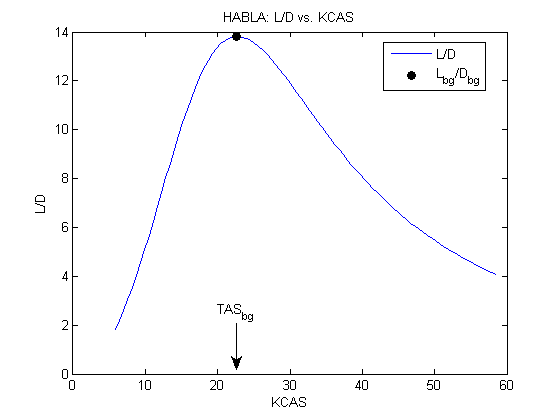
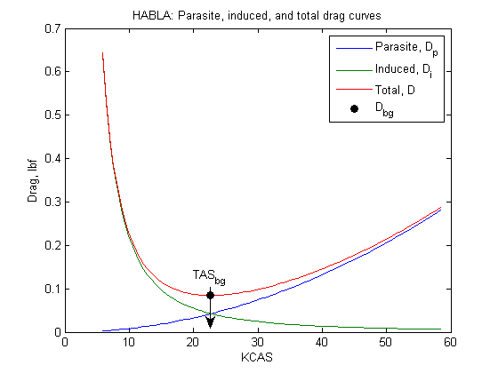

Preliminary Sizing for HABLA
Contents
Aircraft Parameters
The aircraft parameters are declared as follows.
m_gopro = convmass(.167,'kg','lbm'); %GoPro mass (with housing), 94g without housing m_apm = convmass(.021,'kg','lbm'); % ardupilot mass, lbm m_glider = (9.6+2.5)*.0625; % glider with battery + servos W = m_glider+m_apm+m_gopro; % weight, lbf b = 31/12; % merlin span, ft S = 175/12^2; % merlin wing reference area, ft^2; A = b^2/S; % wing aspect ratio C_D0 = 0.0200; % guess, flaps up parasite drag coefficient e = 1.78*(1-.045*A^0.68)-0.64; % airplane efficiency factor, Raymer p347
Conditions
h = 1000; % altitude, ft h_m = convlength(h,'ft','m'); phi = 0; % bank angle, deg
Mission Profile
wind=convvel(5,'kts','m/s'); buoy=convvel(1000,'ft/min','m/s'); h_max=convlength(100000,'ft','m');
Calculate atmospheric parameters based on altitude using atmoscoesa:
atmoscoesa is basically ICAO data plus data for >60,000ft
[T, a, P, rho] = atmoscoesa(h_m, 'Warning'); rho = convdensity(rho,'kg/m^3','slug/ft^3');
Best glide speed:
TAS_bg = sqrt((2*W) / (rho*S))... *(1./(4*C_D0.^2 + C_D0.*pi*e*A*cos(phi)^2)).^(1/4); % TAS, fps KTAS_bg = convvel(TAS_bg,'ft/s','kts')'; KCAS_bg = correctairspeed(KTAS_bg,a,P,'TAS','CAS')';
Best glide slope:
LODmax=1/2*sqrt(pi*A*e/C_D0) gamma_bg_rad = asin( -sqrt((4.*C_D0')./(pi*e*A*cos(phi)^2 + 4.*C_D0')) ); gamma_bg = convang(gamma_bg_rad,'rad','deg') % best glide slope, deg % nmi range gliding from 40,000ft range_bg=40000/tand(-gamma_bg)/5280
LODmax = 13.8144 gamma_bg = -4.1403 range_bg = 104.6548
Best glide lift and drag:
D_bg = -W*sin(gamma_bg_rad); L_bg = W*cos(gamma_bg_rad); qbar = dpressure([TAS_bg' zeros(size(TAS_bg,2),2)], rho); C_D_bg = D_bg./(qbar*S); C_L_bg = L_bg./(qbar*S);
Verification
Plots to make sure my calcs are right:
TAS = (10:100)'; % true airspeed, fps KTAS = convvel(TAS,'ft/s','kts')'; % true airspeed, kts KCAS = correctairspeed(KTAS,a,P,'TAS','CAS')'; % corrected airspeed, kts qbar = dpressure([TAS zeros(size(TAS,1),2)], rho); Dp = qbar*S.*C_D0; % parasite drag Di = (2*W^2)/(rho*S*pi*e*A).*(TAS.^-2); % induced drag D = Dp + Di; alp_bg=C_L_bg/(2*pi)*180/pi; % from above, the angle of attack is about 7 degrees. Adding the flight path angle (i.e. best glide angle) from above shows the fuselage pitch (attitude angle theta) to be about 2 degrees. L = W;
Plot L/D versus KCAS
h1 = figure(1); plot(KCAS,L./D); title('HABLA: L/D vs. KCAS'); xlabel('KCAS'); ylabel('L/D'); hold on plot(KCAS_bg,L_bg/D_bg,'Marker','o','MarkerFaceColor','black',... 'MarkerEdgeColor','black','Color','white'); hold off legend('L/D','L_{bg}/D_{bg}','Location','Best'); annotation('textarrow',[0.4225 0.4225],[0.23 0.12],'String','TAS_{bg}');
Plot parasite, induced, and total drag curves
h2 = figure(2); plot(KCAS,Dp,KCAS,Di,KCAS,D); title('HABLA: Parasite, induced, and total drag curves'); xlabel('KCAS'); ylabel('Drag, lbf'); hold on plot(KCAS_bg,D_bg,'Marker','o','MarkerFaceColor','black',... 'MarkerEdgeColor','black','Color','white'); hold off legend('Parasite, D_p','Induced, D_i','Total, D','D_{bg}','Location','Best'); annotation('textarrow',[0.4225 0.4225],[0.23 0.12],'String','TAS_{bg}');